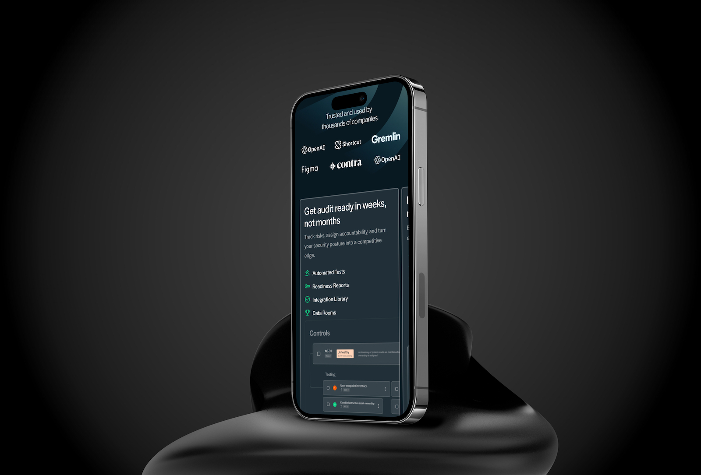
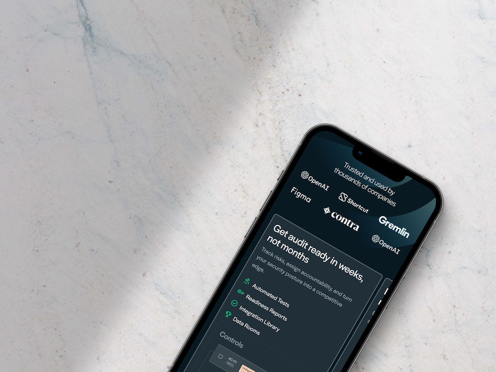
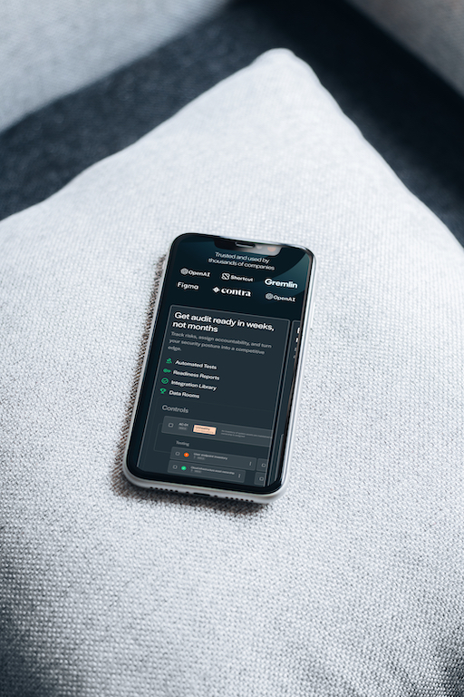
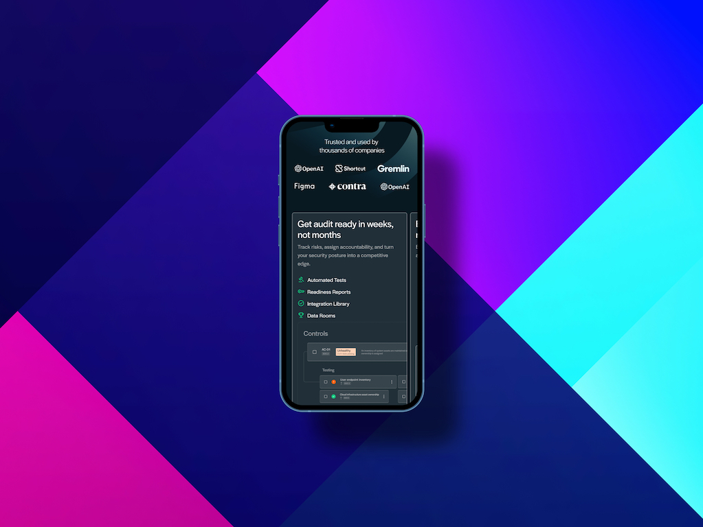
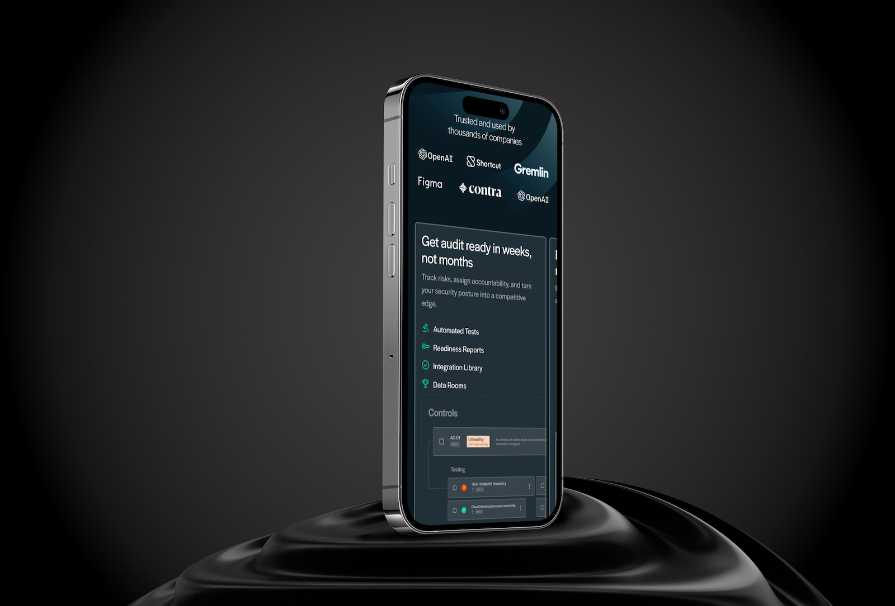

Compliance, Reimagined
Compliance automation is a category built on anxiety — SOC 2, ISO 27001, HIPAA audits are expensive, opaque, and time-consuming. Secureframe was founded to change that: a platform that automates the grunt work of compliance and gives engineering and security teams their time back.
The design challenge was equally fundamental. The compliance software space is crowded with brands that look the same — cold, corporate, heavy on padlocks and checkmarks. Secureframe needed a visual identity that felt genuinely different: clear, confident, and modern enough to appeal to the developer-adjacent buyers making these decisions.
As Principal Designer, I shaped the brand system from the ground up — establishing the visual language, building out component libraries, directing the web presence, and introducing motion as a core tool for communicating AI capabilities like ComplyAI.








A System Built for Speed
Startups at Secureframe's growth stage ship constantly — new features, new landing pages, new campaigns, new sales materials. A design system that requires designers for every output is a bottleneck. I built for scale: a component library tight enough to maintain consistency, but flexible enough that marketing and product teams could move fast without breaking the look.
The introduction of ComplyAI pushed the work into new territory. Communicating an AI-powered compliance layer required motion — abstract data flows, intelligent processing made tangible. I developed the visual language for ComplyAI that showed the AI working: not a static interface, but a living system reducing the noise of compliance down to clear, actionable signal. The motion system brought that story to life across the website, social, and sales contexts.